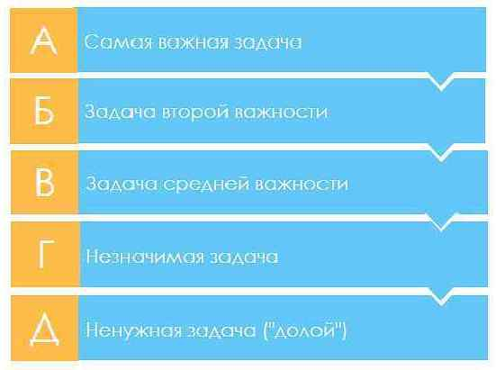
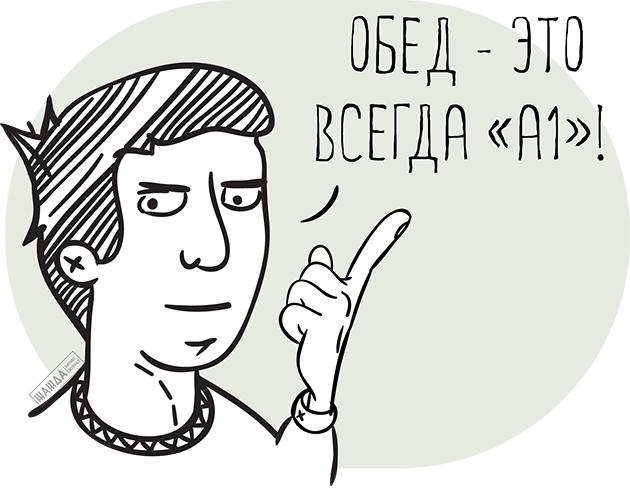

Метод «АБВГД» представляет собой эффективный способ расстановки задач по приоритетности, который вы можете применять ежедневно. Этот метод прост и настолько эффективен, что способен, при условии регулярного и грамотного использования, возвести вас в ранг самых продуктивных и производительных людей в вашей сфере деятельности. Сила метода в его простоте. Вот как он работает. Вы начинаете с составления перечня всего, что вам предстоит сделать в течение наступающего дня. Думайте на бумаге. После этого вы ставите букву А, Б, В, Г или Д перед каждым пунктом вашего перечня.
Задача типа «А» определяется как нечто, имеющее на данном этапе самое важное значение, нечто, что вы обязаны сделать, иначе рискуете столкнуться с серьезными последствиями. Задачей типа «А» может стать визит к важному клиенту или написание отчета для начальника. Данные задачи представляют собой настоящих, зрелых «лягушек» вашей жизни. Если перед вами стоит более чем одна задача типа «А», вы оцениваете их приоритетность, помечая А-1, А-2, А-3 и т. д. Задача А-1 представляет собой самую крупную и безобразную «лягушку» из всех, с которыми вам предстоит управиться.
Задача типа «Б» определяется как та, которую вам следовало бы выполнить. Тем не менее последствия, в случае ее выполнения или невыполнения, являются достаточно мягкими. Такие задачи представляют собой не более чем «головастиков» вашей жизни. Это значит, что, не сделай вы соответствующую работу, кто-нибудь окажется недовольным или поставленным в невыгодные условия, однако в любом случае по степени важности указанные задачи и близко не соответствуют задачам типа «А». Звонок по не очень срочному вопросу или просмотр накопившейся электронной почты могли бы составить сущность задачи типа «Б».
Правило, которого вы должны придерживаться, гласит:
никогда не приступайте к задаче типа «Б», пока у вас остается незавершенной задача типа «А».
Никогда не позволяйте «головастикам» отвлекать вас, пока крупная «лягушка» дожидается своей участи быть съеденной!
Задача типа «В» определяется как нечто, что было бы прекрасно сделать, но от чего не с ледует ожидать никаких последствий, сделай вы это или нет. Задачей типа «В» может стать звонок другу, чашечка кофе, обед с коллегой или какое-либо личное дело, совершенное в рабочие часы. Подобного рода «мероприятия» не оказывают ровным счетом никакого влияния на вашу работу.
Задача типа «Г» оценивается как работа, которую вы можете поручить кому-нибудь другому. Правило в данном случае гласит, что вы должны поручать другим все, что им по силам, тем самым высвобождая для себя время на задачи типа «А», которые вы и только вы в состоянии выполнить.
Задача типа «Д» представляет собой работу, которую можно совсем удалить из вашего перечня дел. Это может быть задача, имевшая прежде значение, но теперь потерявшая актуальность как для вас, так и для других. Нередко это работа, которую вы делаете изо дня в день либо просто по привычке, либо находя в ее выполнении удовольствие.
После того как вы применили метод «АБВГД» к своему перечню дел на день, вы полностью организовали свою работу и подготовили почву для того, чтобы более важные дела выполнялись быстрее.

Важнейшим условием для того, чтобы метод «АБВГД» действительно работал на вас, является соблюдение следующего требования: приступать к выполнению задачи А-1 без промедления и затем трудиться над ней, пока она не будет полностью завершена. Пустите в ход силу воли, чтобы начать и продолжать работу над самой главной для вас задачей на текущий момент. Беритесь за свою самую большую «лягушку» и «ешьте» ее не отрываясь до самого последнего кусочка. Умение проанализировать свой перечень дел на день и выделить задачу А-1 послужит отправной точкой для достижения истинно большого успеха в вашей деятельности, повысит вашу самооценку, наполнит уважением к себе и чувством гордости за свои достижения. Когда вы приобретете привычку полностью концентрироваться на своем самом важном деле, т. е. задаче А-1, — иными словами, на съедании главной своей «лягушки» — вы научитесь делать вдвое, а то и втрое больше, чем окружающие вас люди.